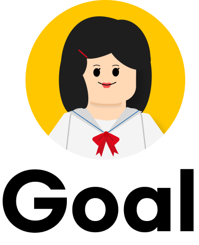
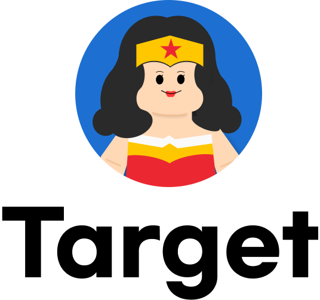
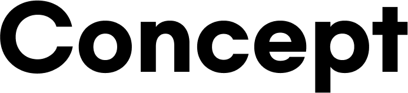
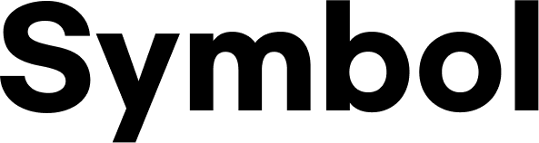
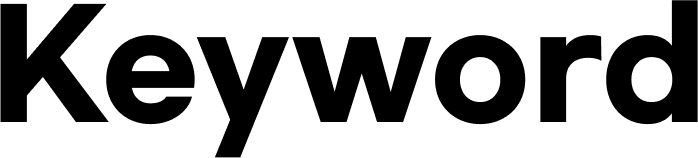

- 작업기여도 100%
- 작업기간 2024.04.01 - 2024.05.31
Portfolio Design
상상을 현실로, 코드를 조립하는 건축가
-

전체적인 레고컨셉에 아이덴티티를 자연스럽게 녹여 전체 페이지의 흐름이 편안하도록 합니다.
수 많은 포트폴리오 중에서 어디선가 본듯한 디자인이 아닌, 개인의 개성이 잘 나타남과 동시에
보는 이에게 저의 장점과 목표과 잘 전달 될 수 있도록 디자인 하였습니다. -

포트폴리오를 주로 선보이게 될 타겟층은 주요타겟인 채용담당자와 서브타겟인 주변지인으로 정하였습니다.

작은 플라스틱 조각들을 조립하여 다양한 구조물과 모형을 만들 수 있는
레고는,
창의성과 다양한 아이디어를 촉진하며, 협업과 공통작업을
장려하는 문화를 가지고 있습니다.
레고를 포트폴리오의 컨셉으로 선택함으로써 저의 작업이 다채롭고, 협업을
중요하게 생각한다는 메시지를 전달하고자 했습니다.

큐브처럼 일정한 모양으로 배치한 파란색 원을 통해 안정감을
표현함과 동시에
포인트로 완전히 다른 색감을 가진 통통 튀는 노란색 원을 통해 수 많은
사람들 속에서도
눈에 확 들어오는 창의적인 인재가 되겠다는 포부를
담아보았습니다.

저의 아이덴티티를 잘 나타내는 네가지 키워드를 포트폴리오 컨셉인
"레고" 의 특징에 접목 시켰습니다.
또한, 서브타이틀을 활용해 추상적이던 키워드에 대한 이해를 돕도록
하였습니다.
Infinite
무한한 잠재력
같은 조각으로도
수천가지의 모양으로 변화하는 끝없는
사용성
Concentration
멈추지 않고 달리다
블록을 쌓기 시작하면 멈출 수 없듯이,
끝을 확인하기 전까지 파고드는 집중력
Flexibility
조립과 해체
쉽게 조립되고 해체되는 레고처럼,
지속적으로 변화하는 웹의 세계를 받아들일 수 있는 유연성
Communication
협업과 소통
블럭과 코드 모두 혼자서는 큰그림을 완성 할 수 없기에
어떤 순간에도 소통을 멈추지않고 협력하고 소통하는 인재

레고의 다양한 색상중 파란색과 노란색은 각각 안정감과
활기를 상징하는 색으로,
포트폴리오에 안정적이면서도 산뜻하고 창의적인 분위기를 전달하고자 두
색상을 각각 메인컬러와 서브컬로로 지정하였습니다.


G마켓 산스와 여기어때 잘난체 고딕은
화려함보다는 친숙함에 초점을 두고있어
사용하기 편리한 폰트입니다.
이 폰트들은 널리 사용되고있으며,
많은 사람들이 익숙하고 편안하게 느낄 수 있습니다.
저의 포트폴리오를 보는 대상이 친숙하고,
쉽게 접근할 수 있는 폰트를 사용하고 싶다는 의지를 담았습니다.
여기어때 잘난체 고딕
타이틀 텍스트
Bold 타이틀 텍스트는 잘난체고딕 입니다.
Bold Title Font-Jalnan Gothic입니다.
Gmarket Sans
본문폰트 한글/영문
Bold 메인 한글/영문 폰트는 G마켓산스 입니다.
Medium 메인 한글/영문 폰트는 G마켓산스 입니다.
Intro
웹 사이트의 얼굴인 메인 인트로 섹션입니다.
핵심 컨셉 요소인 "레고"를 사용하여 중요한 키워드를 구성하였고,
문장을 연결하는 단어들에는 손글씨를 닮은 폰트를 사용하여
상상과 현실이라는 차이를 한 눈에 드러나도록 제작하였습니다.
또한, "코드를 조립"한다는 키워드를 통해
레고와 코딩을 차곡차곡 쌓아간다는 공통점으로 연결하여
제가 추구하는 스스로의 컨셉이 느껴질 수 있도록 하였습니다.
Work
첫 발걸음을 내딛은 순간부터 지금까지의 작업물을 담아낸
섹션입니다.
안정적이고 창의적인 느낌의 컬러 컨셉에 어울리도록,
메인 이미지와 로고 썸네일을 직접 제작하여
전체적으로 조화로운 느낌을 받을 수 있게 작업하였고
전체 페이지와 현재 페이지의 인덱스를 실시간으로
확인 할 수 있도록 구성하는 등, 열심히 달려온 발자취를
강조하기 위해 직관적인 구성을 선택하였습니다.
Project
기획부터 실현까지 차근차근 진행해온 프로젝트를 담은 섹션입니다.
섹션을 나타내는 타이틀에 레고를 사용하여 컨셉의 흐름이
끊기지 않도록 처리하면서도, 강하지 않은 옅은 회색을
사용하여
프로젝트의 본문이 아닌 타이틀로
시선이 분산되지 않도록
노력하였습니다.
밝고 진한 색상을 전반적으로 사용하고 있기 때문에
본문의 구성은 의도적으로 심플하게 디자인하여,
산만한 느낌을 주지 않고 내용에 주목할 수 있도록 하였습니다.
About Me
작업물을 넘어 "현실의 나"와 관련된 정보를 담은 섹션입니다.
현재에서 과거로 흘러가는 역방향 타임라인으로 구성하여,
현재의 상태를 먼저 확인한 뒤에 어떤 경로를 통해 달려왔는지
그 발자취를 알아볼 수 있도록 하였습니다.
성장 과정 중 활동 국가가 변화함에 따라
배경도 함께 바뀌는 것으로 디자인적인 재미를 더했으며,
각 연도별 활동에 대한 자세한 정보는
말풍선에 담아 강조하는 방식으로 전달하고자 했습니다.